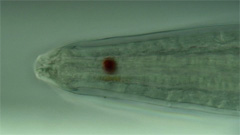

Test Clips of 2M22C6 lip region
Without Streaming
With Streaming

MPEG-4 at 960x540
MPEG-4 at 960x540
MPEG-4 at 480x270
MPEG-4 at 480x270
Quicktime (Sorenson) at 960x540
Quicktime (Sorenson) at 960x540
Quicktime (Sorenson) at 480x270
Quicktime (Sorenson) at 480x270
Copyright 2002